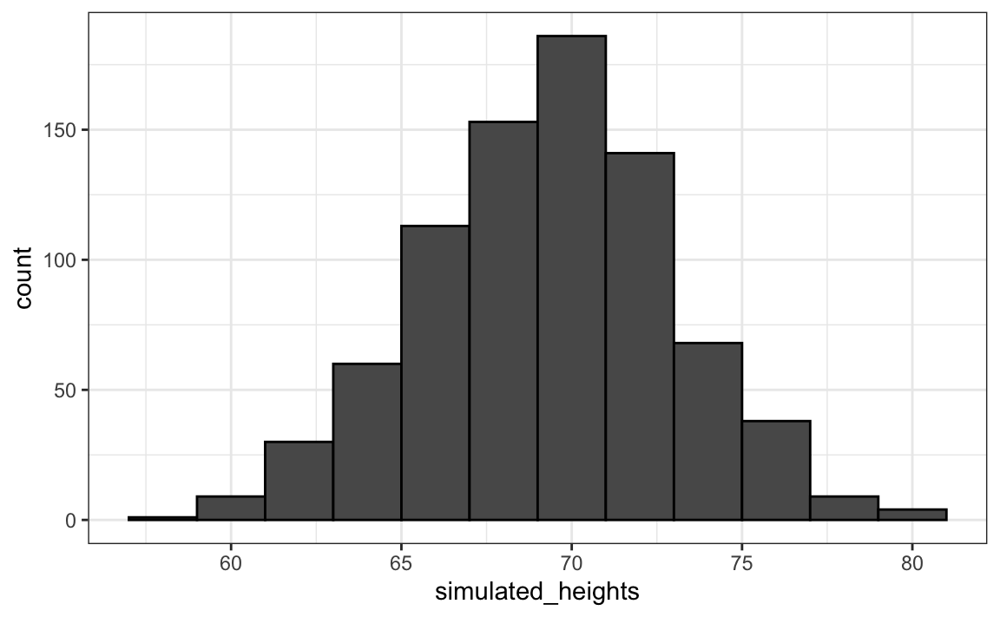

4 Continuous probability
In Section 1.2, we explained why when summarizing a list of numeric values, such as heights, it is not useful to construct a distribution that defines a proportion to each possible outcome. Similarly, for a random variable that can take any value in a continuous set, it impossible to assign a positive probabilities to the infinite number of possible values. Here, we outline the mathematical definitions of distributions for continuous random variables and useful approximations frequently employed in data analysis.
4.1 Cumulative distribution functions
We used the heights of adult male students as an example:
and defined the empirical cumulative distribution function (eCDF) as
F <- function(a) mean(x <= a)which, for any value a, gives the proportion of values in the list x that are smaller or equal than a.
Let’s connect the eCDF to probability by asking: if I randomly pick one of the male students, what is the chance that he is taller than 70.5 inches? Since every student has the same chance of being picked, the answer to this is equivalent to the proportion of students that are taller than 70.5 inches. Using the eCDF we obtain an answer by typing:
1 - F(70)
#> [1] 0.377The CDF is a version of the eCDF that assigns theoretical probabilities for each \(a\) rather than proportions computed from data. Although, as we just demonstrated, proportions computed from data can be used to define probabilities for a random variable. Specifically, the CDF for a random outcome \(X\) defines, for any number \(a\), the probability of observing a value larger than \(a\).
\[ F(a) = \mbox{Pr}(X \leq a) \]
Once a CDF is defined, we can use it to compute the probability of any subset of values. For instance, the probability of a student being between height a and height b is:
\[ \mbox{Pr}(a < X \leq b) = F(b)-F(a) \]
Since we can compute the probability for any possible event using this approach, the CDF defines the probability distribution.
4.2 Probability density function
A mathematical result that is very useful in practice is that, for most CDFs, we can define a function, call it \(f(x)\), that permits us to construct the CDF using Calculus, like this:
\[ F(b) - F(a) = \int_a^b f(x)\,dx \]
\(f(x)\) is referred to as the probability density function. The intuition is that even for continuous outcomes we can define tiny intervals, that are almost as small as points, that have positive probabilities. If we think of the size of these intervals as the base of a rectangle, the probability density function \(f\) determines the height of the rectangle so that the summing up of the area of these rectangles approximate the probability \(F(b) - F(a)\). This sum can be written as Reimann sum that is approximated by an integral:

An example of such a continuous distribution is the normal distribution. As we saw in Section 1.5, the probability density function is given by:
\[f(x) = e^{-\frac{1}{2}\left( \frac{x-m}{s} \right)^2} \]
The cumulative distribution for the normal distribution is defined by a mathematical formula which in R can be obtained with the function pnorm. We say that a random quantity is normally distributed with average m and standard deviation s if its probability distribution is defined by:
This is useful because, if we are willing to use the normal approximation for, let’s say, height, we don’t need the entire dataset to answer questions such as: What is the probability that a randomly selected student is taller then 70 inches? We just need the average height and standard deviation:
4.3 Theoretical distributions as approximations
The normal distribution is derived mathematically; we do not need data to define it. For practicing data scientists, almost everything we do involves data. Data is always, technically speaking, discrete. For example, we could consider our height data categorical, with each specific height a unique category. The probability distribution is defined by the proportion of students reporting each height. Below is a plot of that probability distribution:

While most students rounded up their heights to the nearest inch, others reported values with more precision. One student reported his height to be 69.6850393700787, which is 177 centimeters. The probability assigned to this height is 0.0012315 or 1 in 812. The probability for 70 inches is much higher at 0.1059113, but does it really make sense to think of the probability of being exactly 70 inches as being different than 69.6850393700787? Clearly it is much more useful for data analytic purposes to treat this outcome as a continuous numeric variable, keeping in mind that very few people, or perhaps none, are exactly 70 inches, and that the reason we get more values at 70 is because people round to the nearest inch.
With continuous distributions, the probability of a singular value is not even defined. For instance, it does not make sense to ask what is the probability that a normally distributed value is 70. Instead, we define probabilities for intervals. We therefore could ask, what is the probability that someone is between 69.5 and 70.5?
In cases like height, in which the data is rounded, the normal approximation is particularly useful if we deal with intervals that include exactly one round number. For example, the normal distribution is useful for approximating the proportion of students reporting values in intervals like the following three:
Note how close we get with the normal approximation:
However, the approximation is not as useful for other intervals. For instance, notice how the approximation breaks down when we try to estimate:
with:
In general, we call this situation discretization. Although the true height distribution is continuous, the reported heights tend to be more common at discrete values, in this case, due to rounding. As long as we are aware of how to deal with this reality, the normal approximation can still be a very useful tool.
4.4 The probability density
For categorical distributions, we can define the probability of a category. For example, a roll of a die, let’s call it \(X\), can be 1, 2, 3, 4, 5 or 6. The probability of 4 is defined as:
\[ \mbox{Pr}(X=4) = 1/6 \]
The CDF can then easily be defined:
\[ F(4) = \mbox{Pr}(X\leq 4) = \mbox{Pr}(X = 4) + \mbox{Pr}(X = 3) + \mbox{Pr}(X = 2) + \mbox{Pr}(X = 1) \]
Although for continuous distributions the probability of a single value \(\mbox{Pr}(X=x)\) is not defined, there is a theoretical definition that has a similar interpretation. The probability density at \(x\) is defined as the function \(f(a)\) such that:
\[ F(a) = \mbox{Pr}(X\leq a) = \int_{-\infty}^a f(x)\, dx \]
For those that know calculus, remember that the integral is related to a sum: it is the sum of bars with widths approximating 0. If you don’t know calculus, you can think of \(f(x)\) as a curve for which the area under that curve, up to the value \(a\), gives you the probability \(\mbox{Pr}(X\leq a)\).
For example, to use the normal approximation to estimate the probability of someone being taller than 76 inches, we use:
1 - pnorm(76, m, s)
#> [1] 0.0321which mathematically is the grey area below:

The curve you see is the probability density for the normal distribution. In R, we get this using the function dnorm.
While it may not be immediately apparent why knowing about probability densities is useful, understanding this concept is essential for individuals aiming to fit models to data for which predefined functions are not available.
4.5 Monte Carlo
R provides functions to generate normally distributed outcomes. Specifically, the rnorm function takes three arguments: size, average (defaults to 0), and standard deviation (defaults to 1), and produces random numbers. Here is an example of how we could generate data that looks like our reported heights:
Not surprisingly, the distribution looks normal:

This is one of the most useful functions in R, as it will permit us to generate data that mimics natural events and answers questions related to what could happen by chance by running Monte Carlo simulations.
If, for example, we pick 800 males at random, what is the distribution of the tallest person? How rare is a seven-footer in a group of 800 males? The following Monte Carlo simulation helps us answer that question:
Having a seven-footer is quite rare:
mean(tallest >= 7*12)
#> [1] 0.0191Here is the resulting distribution:

Note that it does not look normal.
4.6 Continuous distributions
The normal distribution is not the only useful theoretical distribution. Other continuous distributions that we may encounter are the student-t, Chi-square, exponential, gamma, beta, and beta-binomial. R provides functions to compute the density, the quantiles, the cumulative distribution functions and to generate Monte Carlo simulations. R uses a convention that lets us remember the names, namely using the letters d, q, p, and r in front of a shorthand for the distribution. We have already seen the functions dnorm, pnorm, and rnorm for the normal distribution. The functions qnorm gives us the quantiles. We can therefore draw a distribution like this:
x <- seq(-4, 4, length.out = 100)
qplot(x, f, geom = "line", data = data.frame(x, f = dnorm(x)))For the student-t, described later in Section 11.2.3, the shorthand t is used so the functions are dt for the density, qt for the quantiles, pt for the cumulative distribution function, and rt for Monte Carlo simulation.
4.7 Exercises
1. Assume the distribution of female heights is approximated by a normal distribution with a mean of 64 inches and a standard deviation of 3 inches. If we pick a female at random, what is the probability that she is 5 feet or shorter?
2. Assume the distribution of female heights is approximated by a normal distribution with a mean of 64 inches and a standard deviation of 3 inches. If we pick a female at random, what is the probability that she is 6 feet or taller?
3. Assume the distribution of female heights is approximated by a normal distribution with a mean of 64 inches and a standard deviation of 3 inches. If we pick a female at random, what is the probability that she is between 61 and 67 inches?
4. Repeat the exercise above, but convert everything to centimeters. That is, multiply every height, including the standard deviation, by 2.54. What is the answer now?
5. Notice that the answer to the question does not change when you change units. This makes sense since the standard deviations from the average for an entry in a list are not affected by what units we use. In fact, if you look closely, you notice that 61 and 67 are both 1 SD away from the average. Compute the probability that a randomly picked, normally distributed random variable is within 1 SD from the average.
6. To understand the mathematical rationale that explains why the answers to exercises 3, 4, and 5 are the same, suppose we have a random variable with average \(m\) and standard error \(s\). Suppose we ask the probability of \(X\) being smaller or equal to \(a\). Remember that, by definition, \(a\) is \((a - m)/s\) standard deviations \(s\) away from the average \(m\). The probability is:
\[ \mbox{Pr}(X \leq a) \]
Now we subtract \(\mu\) to both sides and then divide both sides by \(\sigma\):
\[ \mbox{Pr}\left(\frac{X-\mu}{\sigma} \leq \frac{a-\mu}{\sigma} \right) \]
The quantity on the left is a standard normal random variable. It has an average of 0 and a standard error of 1. We will call it \(Z\):
\[ \mbox{Pr}\left(Z \leq \frac{a-\mu}{\sigma} \right) \]
So, no matter the units, the probability of \(X\leq a\) is the same as the probability of a standard normal variable being less than \((a - \mu)/\sigma\). If mu is the average and sigma the standard error, which of the following R code would give us the right answer in every situation?
mean(X <= a)pnorm((a - m)/s)pnorm((a - m)/s, m, s)pnorm(a)
7. Imagine the distribution of male adults is approximately normal with an expected value of 69 and a standard deviation of 3. How tall is the male in the 99th percentile? Hint: use qnorm.
8. The distribution of IQ scores is approximately normally distributed. The average is 100 and the standard deviation is 15. Suppose you want to know the distribution of the highest IQ across all graduating classes if 10,000 people are born each in your school district. Run a Monte Carlo simulation with B=1000 generating 10,000 IQ scores and keeping the highest. Make a histogram.